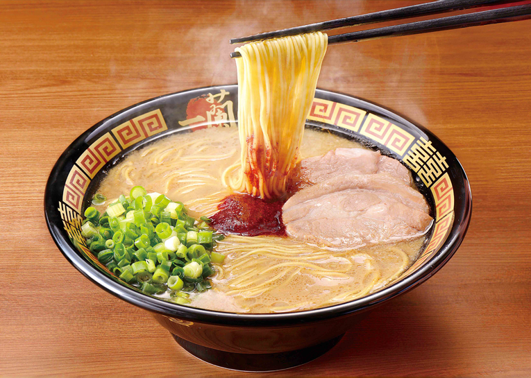

Licor (Sake / Strong Zero)

El sake es el licor tradicional de arroz en Japón, pero también hay bebidas modernas como la Strong Zero, conocida por su sabor y potencia.
Sushi
El sushi es el plato japonés más conocido, servido de formas innovadoras como en cintas transportadoras.
Ramen
Delicioso caldo con fideos, carne y huevo. Cada región tiene su propia receta especial de ramen.
Dango
El Dango (brochetas de arroz dulce) es una comida callejera muy popular durante festivales y celebraciones.